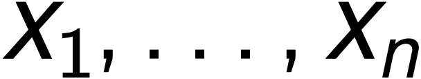
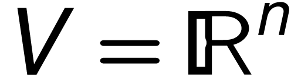
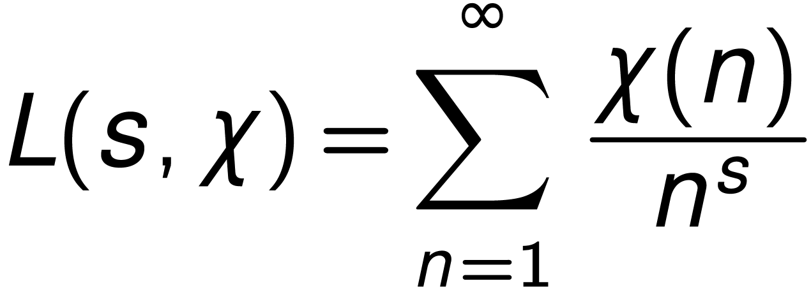
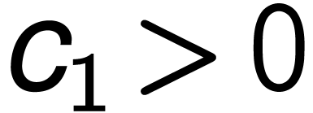
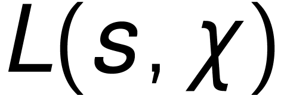
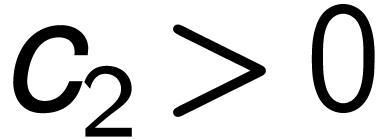

mode
Math
27 Nov. 2022
|
|
LaTeX is far from satisfactory for scientific writing.
You know Leslie Lamport, ACM Turing Award laureate, if you are using LaTeX. He is actually surprised LaTeX is still being used and no-one has invented something better :) #HLF22
LaTeX is a tool, and it empowers you as well as limit you, in many ways.
TeXmacs is designed for those who are not satisfied by the usual LaTeX workflow and dreamt of something different. With TeXmacs you will have time to develop more interesting skills in college.
The best latex code is no latex code :) and TeXmacs allows you to write your best latex no-code.
TeXmacs makes scientific writing intuitive (truly WYSIWYG) and structured (so WYSIWYM) in comparison to LaTeX.
TeXmacs is driven by the very philosophy of making technical document editing both innovative and more humane, beautiful and conceptually correct.
No waste of screen estate, uncluttered UIs, structured editing and pixel-perfect typesetting. TeXmacs allows you to focus on your work without distractions.
All you need is in one place.
TeXmacs has slide tools, graphics tools, an internal
bibliographic database, interactive sessions in a variety of
engines, various plugins and allows to export
The name was chosen early on to pay due respect to the two main
sources of inspiration: the TeX system and the
TeXmacs has a radically different design. It aims neither to be another LaTeX frontend nor to be limited by LaTeX in how the output is produced.
I use TeXmacs everyday for lectures, presentations, papers,
exercise sheets and export most of my documents to LaTeX.
There is no need of LaTeX in my workflow, just to send the
final version to the editors.
— Massimiliano Gubinelli @The GNU TeXmacs Forum
toolbar / menubar
keyboard shortcuts
Inline formulae $
Let  be variables. Let a real vector space.
Displayed formulae Alt+$
Several equations
Alt+&
Shift+F6(=type the same capital twice) Shift+F7
Alt+F Alt+S Alt+STab
Alt+~ Alt+^
Shift+F5Shift+S
Shift+F5Shift+I Shift+F5Shift+I!
Shift+F5Shift+P
System tools (e.g.
Internal TeXmacs names Alt+Q
|  | (1) |
Conjecture
where  is an absolute, effectively computable constant and  is defined in (1)
As a direct consequence of Conjecture 1 we have
Corollary
for
where  is an absolute, effectively computable constant.